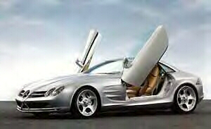
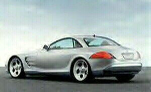

Mercedes Benz Vision SLR

Specs
Price |
N/A |
Top Speed |
199mph(est) |
Acceleration |
|
Engine |
|
0-30mph |
N/A |
Type |
Supercharged V8, 24valve SOHC |
0-60mph |
4.2sec(est) |
Displacement |
5.5L(5439cc) |
0-100 |
N/A |
Power |
557hp@6500rpm |
1/4 mile |
N/A |
Torque |
530 lbs-ft@4000rpm |
Weight |
N/A |
Handling |
|
Gas mileage |
|
Skidpad |
N/A |
City |
N/A |
600ft slalom |
N/A |
Highway |
N/A |
Powertrain |
Front engined, rear wheel drive, 5 speed auto |
(? = incomplete data or unverified info, N/A = info Not Available)
Beyond the specs:
Take the amazing engine from the Mercedes-Benz E55 AMG sports sedan, supercharge it, throw it into a light weight beautifully designed two seater and this is what you get. The awesome Vision SLR, its smooth V8 provides a massive amount of torque and a very impressive 557hp. No doubt, this car will perform, even with its 5-speed auto it can challenge (perhaps even beat?) the current Viper (which has a 6-speed manual). This car brings together Mercedes luxury, refinement, and Mercedes racing technology into one very high-class autobahn dominator. It is set to compete against Ferrari which I am convinced it should be able to do very well. This car is still not available so not much more info can be provided. This car is an amazing artistic creation from MB and it makes one awesome unit of personal transport.
~Oracle